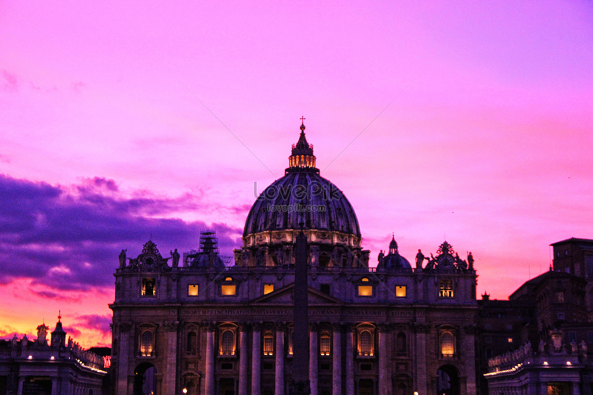
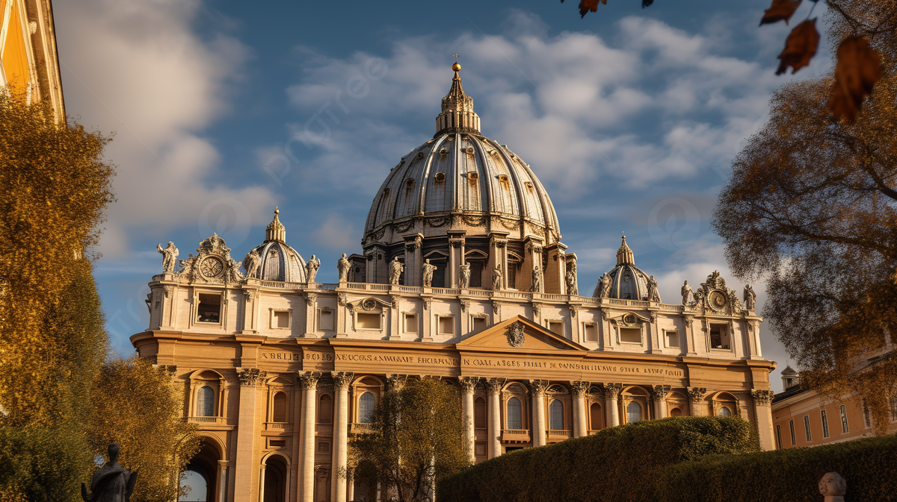
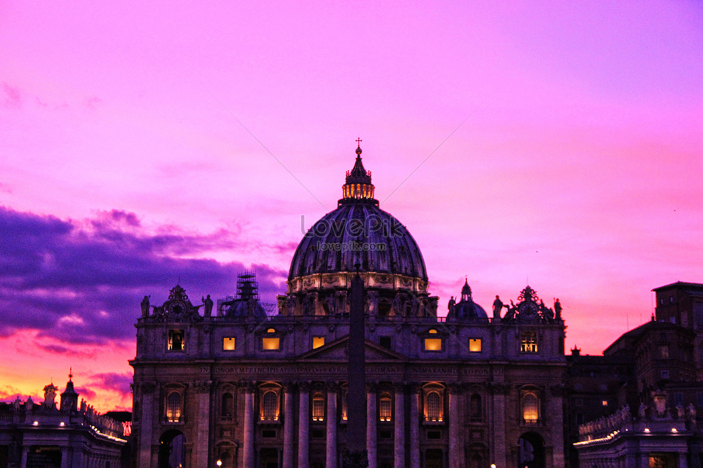
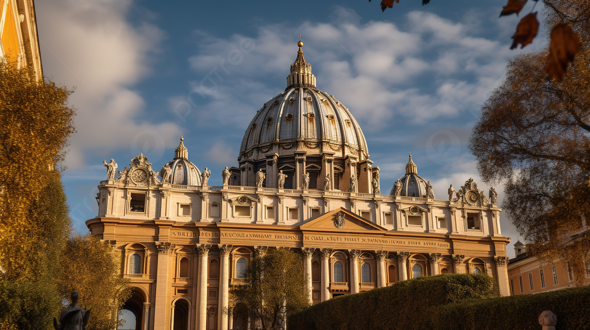

S.T Peters Basilica
renowned works of Renaissance architecture
The Basic History
The Papal Basilica of Saint Peter in the Vatican City (Italian: Basilica Papale di San Pietro in Citta di Vaticano), or simply Saint Peter's Basilica (Latin: Basilica Sancti Petri; Italian: Basilica di San Pietro [baˈziːlika di sam ˈpjɛːtro]), is a church of the Italian High Renaissance located in Vatican City, an independent microstate enclaved within the city of Rome, Italy.
.......
s
Main History
After the crucifixion of Jesus, it is recorded in the Biblical book of the Acts of the Apostles that one of his twelve disciples, Simon known as Saint Peter, a fisherman from Galilee, took a leadership position among Jesus' followers and was of great importance in the founding of the Christian Church. The name Peter is "Petrus" in Latin and "Petros" in Greek,
.......
s
Status
St. Peter's Basilica is one of the papal basilicas (previously styled "patriarchal basilicas") and one of the four Major Basilicas of Rome the others (all of which are also Papal Basilicas) being the Basilicas of St. John Lateran, St. Mary Major, and St. Paul outside the Walls. The r ank of major basilica confers on St. Peter's Basilica precedence before all minor basilicas worldwide.
Structure
St. Peter's is a church built in the Renaissance style located in the Vatican City west of the River Tiber and near the Janiculum Hill and Hadrian's Mausoleum. I ts central dome dominates the skyline of Rome. The basilica is approached via St. Peter's Square, a forecourt in two sections, both surrounded by tall colonnades. The first space is oval and the second trapezoidal. The façade of the basilica, with a giant order of columns.
Successive plans
Pope Julius' scheme for the grandest building in Christendom was the subject of a competition for which a number of entries remain intact in the Uffizi Gallery, Florence. It was the design of Donato Bramante that was selected, and for which the foundation stone was laid in 1506. This plan was in the form of an enormous Greek Cross with a dome inspired by that of the huge circular Roman temple, the Pantheon
 


